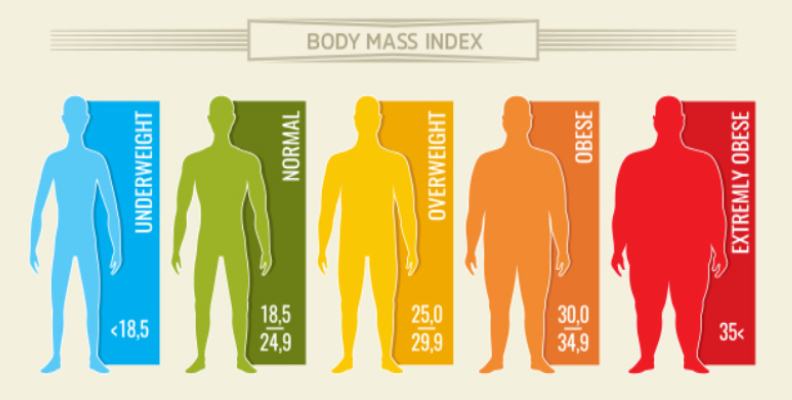
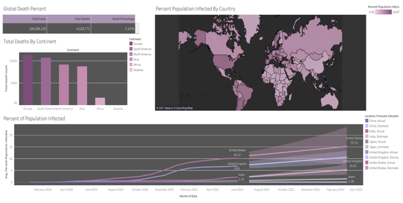

Welcome!
Hi there,
I'm Servin!
I graduated from the University of California: San Diego in 2021 with a Bachelor of Science
in Cog-Sci : Machine Learning! I come from a very strong mathematical background and love to
learn new things. I've spent the last 2+ years learning how to code in python, SQL, and more.
Over my academic career I've done many projects ranging from Exploratory Data Analysis, Modeling
Statistical Analysis, vareous Supervised and Genetically inspired Machine Learning Algorithms
and more!
 Exploratory Data Anlaysis in Python
Exploratory Data Anlaysis in Python
My group's data analysis project, utilizing datasets from Twitch, and Twitter API's to analyze the top 100 streamers and content creators.
We cross-analyzed Sentiment Analysis alongside Statistical Analysis methods such as OLS Regression and more to see if more friendly Twitch streamers
recieved more sponsorships!
Exploratory Data Analysis in SQL
In this project, I explore through the most recent COVID-19 data collected from "ourworldindata.org" to find infection rates, the percent of the population that is vaccinated, and how deadly the virus is. I also create distinct SQL Views based off said information to use in my Tableau Visualization Project
Data Analysis, Modeling, and Visualizations in Python

Using exploratory linear regression and clustering, I aim to examine several attributes from a onisity dataset to find which attributes are the optimal indicators to predict the weight of an individual.
The Presentation Visualization can be found here and you can read my findings in detail in my Final Report.
Data Visualized via Interactive Dashboard on Tableau

Using data wrangled from my previous Covid-19 Exploratory Project, I created an interactive and informative visualization detailing the infection rate and death rate of COVID-19 as seen by country, region, and worldwide.
Comparison of Multiple Supervised Machine Learning Algorithms
This was my smaller scale replication of the CNM06 Publication. I took three algorithms, SVM, Decision Trees, and Random Forests, analysed their performance across 4 datasets and 10 trials. I also split my data per dataset 4 times using testing partitions of 0.2, 0.3, 0.4, and 0.5 to further analyse what effect, if any, data splitting had on my analysis.
The algorithms' performances were tested using 4 metrics: Accuracy, Precision, Recall, and F1 which I discuss further in my Formal Report.
Genetically Inspired Machine Learning Algorithms
In this Project, I solve a classic Knapsack Problem using Genetic Algorithms, and I break down the different types of crossovers, mutations, and fitnesses functions that can be used for something like this! My Formal Report cross references my findings from 3 different Genetic Algorithms I made, to a result achieved from a Dynamic Programming Algorithm, and I discuss their differences and similarities.
{kind=link}